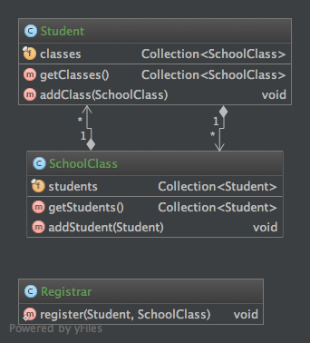

Challenges
Common barriers to functional thinking
Immutability
- If nothing changes, how do you do anything?
Deep Modification
- How do I modify that field way down there?
Immutable Cyclical References
- Parent-Child
- Ownership
- You can't easily update both entities
- In mutable OOP this is a trivial issue
- ...but it adds complexity

Immutable Cyclical References
- Create an entity map
- Use unique IDs for each entity
- Now updates are decoupled